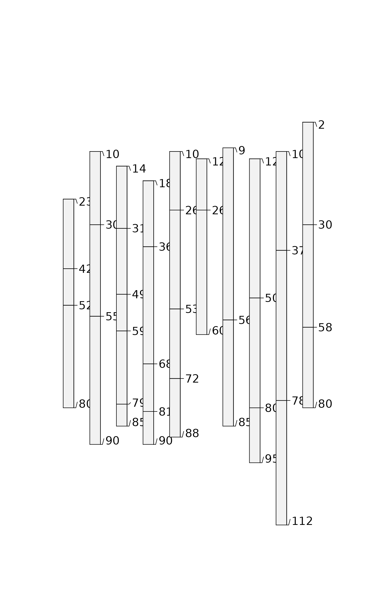
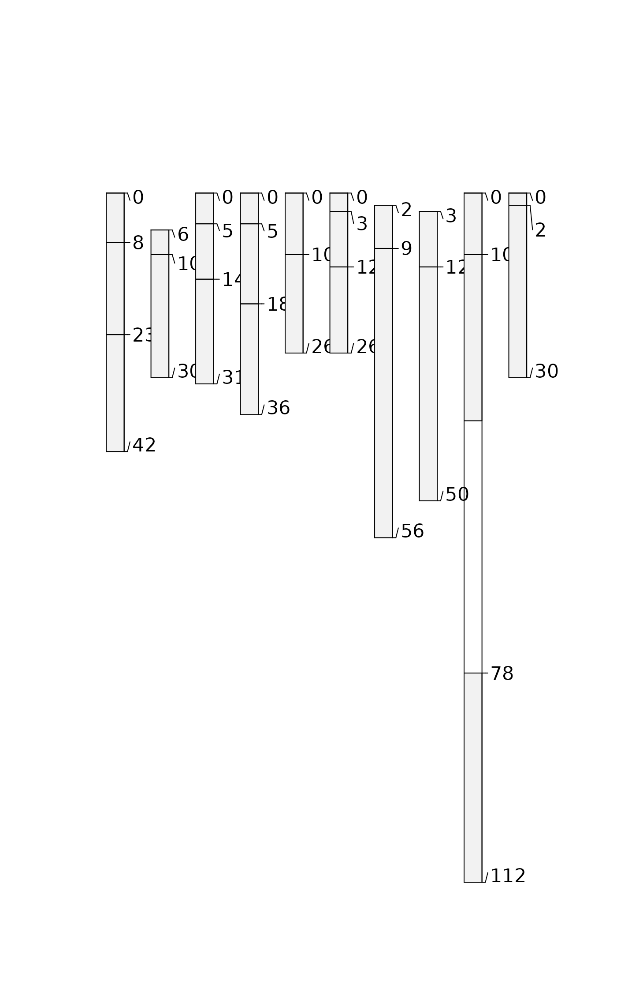
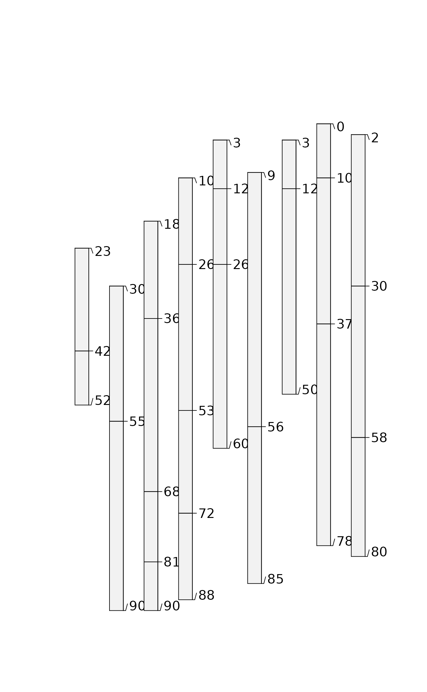
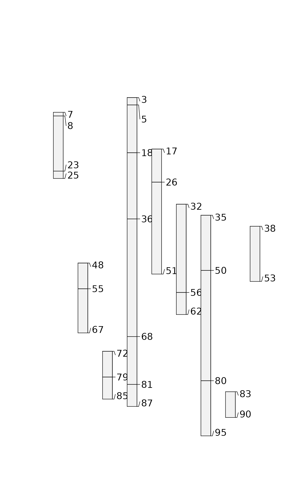
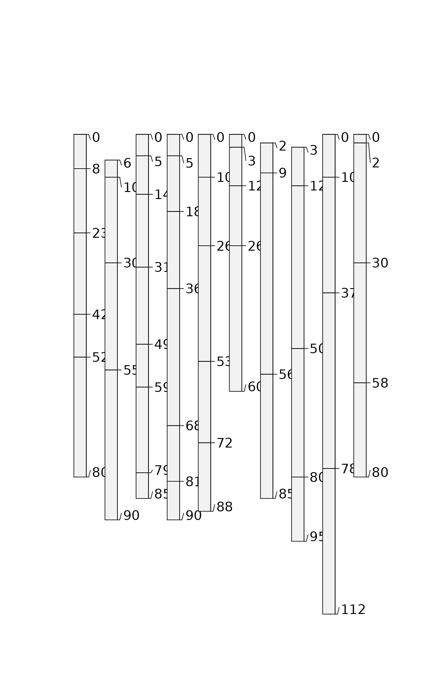
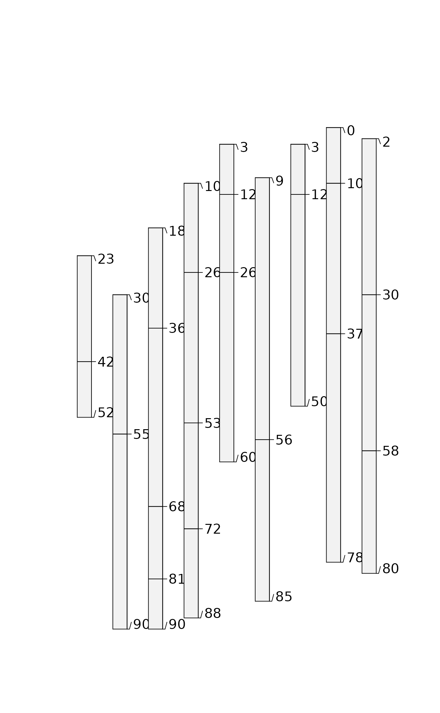
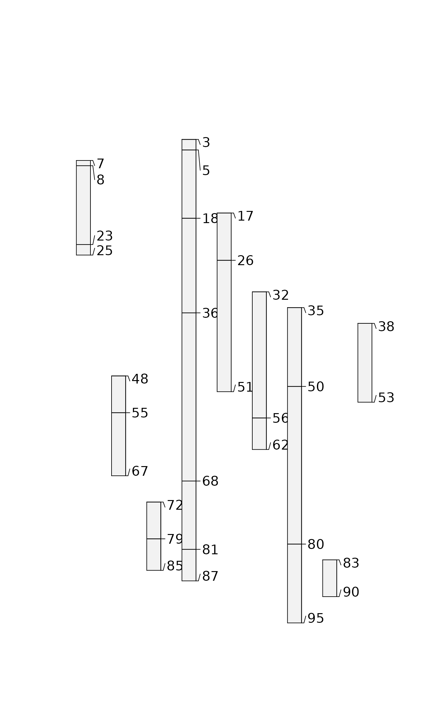
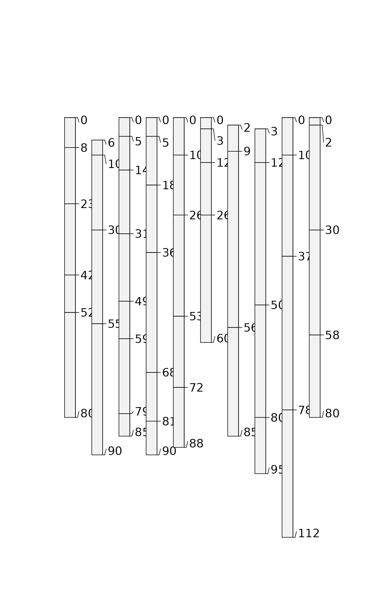

glomApply() is a function used for subsetting SoilProfileCollection objects by depth. It is a wrapper around glom which is intended to subset single-profile SPCs based on depth intervals/intersection.
glomApply works by accepting a function .fun as argument. This function is used on each profile to process a multi-profile SPC for input to glom (via profileApply). For each profile, .fun returns a 2-length numeric vector of top and bottom boundaries glom arguments: z1, z2.
glomApply provides the option to generate profile-specific glom depths for a large SPC and handles iteration and rebuilding of a subset SPC object. Optional arguments include: truncate to cut the boundaries to specified [z1, z2]; invert to the portion outside [z1, z2], modality to either "all" horizons or "thickest" horizon in the glom interval. ... are various expressions you can run on the individual profiles using NSE, similar to mutate.
Usage
glomApply(
object,
.fun = NULL,
truncate = FALSE,
invert = FALSE,
modality = "all",
...,
chunk.size = 100
)Arguments
- object
A SoilProfileCollection
- .fun
A function that returns vector with top and bottom depth (
z1andz2arguments toglom) for a single profilep(as passed byprofileApply)- truncate
Truncate horizon top and bottom depths to
[z1, z2]- invert
Truncate horizon top and bottom depths to
[z1, z2]and then invert result?- modality
Aggregation method for glom result. Default
"all": return all horizons;"thickest": return (shallowest) thickest horizon- ...
A set of comma-delimited R expressions that resolve to a transformation to be applied to a single profile e.g
glomApply(hzdept = max(hzdept) - hzdept)likeaqp::mutate- chunk.size
Chunk size parameter for
profileApply
Examples
# keep examples from using more than 2 cores
data.table::setDTthreads(Sys.getenv("OMP_THREAD_LIMIT", unset = 2))
data(sp3)
depths(sp3) <- id ~ top + bottom
# init horizon designation column in metadata, used by estimateSoilDepth
hzdesgnname(sp3) <- 'name'
# constant depths, whole horizon returns by default
plot(glomApply(sp3, function(p) c(25,100)))

# constant depths, truncated
#(see aqp::trunc for helper function)
plot(glomApply(sp3, function(p) c(25,30), truncate = TRUE))
# constant depths, inverted
plot(glomApply(sp3, function(p) c(25,100), invert = TRUE))

# constant depths, inverted + truncated (same as above)
plot(glomApply(sp3, function(p) c(25,30), invert = TRUE, truncate=TRUE))
 # random boundaries in each profile
plot(glomApply(sp3, function(p) round(sort(runif(2, 0, max(sp3))))))

# random boundaries in each profile (truncated)
plot(glomApply(sp3, function(p) round(sort(runif(2, 0, max(sp3)))), truncate = TRUE))

# calculate some boundaries as site level attribtes
sp3$glom_top <- profileApply(sp3, getMineralSoilSurfaceDepth)
#> Warning: found 1 profiles where pattern did not match and shallowest depth is greater than 0
#> Warning: found 1 profiles where pattern did not match and shallowest depth is greater than 0
#> Warning: found 1 profiles where pattern did not match and shallowest depth is greater than 0
sp3$glom_bottom <- profileApply(sp3, estimateSoilDepth)
# use site level attributes for glom intervals for each profile
plot(glomApply(sp3, function(p) return(c(p$glom_top, p$glom_bottom))))

# random boundaries in each profile
plot(glomApply(sp3, function(p) round(sort(runif(2, 0, max(sp3))))))

# random boundaries in each profile (truncated)
plot(glomApply(sp3, function(p) round(sort(runif(2, 0, max(sp3)))), truncate = TRUE))

# calculate some boundaries as site level attribtes
sp3$glom_top <- profileApply(sp3, getMineralSoilSurfaceDepth)
#> Warning: found 1 profiles where pattern did not match and shallowest depth is greater than 0
#> Warning: found 1 profiles where pattern did not match and shallowest depth is greater than 0
#> Warning: found 1 profiles where pattern did not match and shallowest depth is greater than 0
sp3$glom_bottom <- profileApply(sp3, estimateSoilDepth)
# use site level attributes for glom intervals for each profile
plot(glomApply(sp3, function(p) return(c(p$glom_top, p$glom_bottom))))
